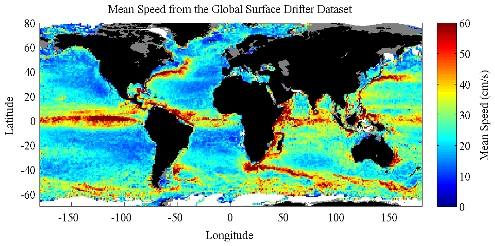

TWODSTATS Mean, variance, and covariance of functions of two variables. __________________________________________________________________  __________________________________________________________________ TWODSTATS computes the first- and second-order statistics of a function of two variables in prescribed bins. This function may either be a scalar-valued or vector-valued quantity at each point. An example of a scalar-valued dataset is temperature as a function of latitude and longitude. An example of a vector-valued dataset is wind or current velocity as a function of latitude and longitude. TWODSTATS, TWODHIST, and TWODMED are three related functions for computing statistics as a function two variables using very fast algorithms that avoid any loops through efficient use of indexing. __________________________________________________________________ Mean and standard deviation of a scalar-valued function MZ=TWODSTATS(X,Y,Z,XBIN,YBIN) where X, Y and Z are arrays of the same length, forms the mean of Z over the XY plane. If XBIN and YBIN are length N and M, respectively, then MZ is of size M-1 x N-1. Bins with no data are assigned a value of NAN. XBIN and YBIN must be monotonically increasing. MZ=TWODSTATS(X,Y,Z,N) uses N bins in the X and Y directions, linearly spaced between the minimum and maximum values. MZ is N-1 x N-1. MZ=TWODSTATS(X,Y,Z,[XMIN XMAX],[YMIN YMAX],N) uses N bins, linearly spaced between the designated X and Y values. MZ is N-1 x N-1. X, Y, and Z can also be cell arrays of numerical arrays, in which case all data values are concatented prior to finding the statistics. __________________________________________________________________ Additional output [MZ,XMID,YMID]=TWODSTATS(...) optionally returns the midpoints XMID and YMID of the bins. [MZ,XMID,YMID,NUMZ]=TWODSTATS(...) also returns the number of good data points in each of the (X,Y) bins. NUMZ is the same size as MZ. [MZ,XMID,YMID,NUMZ,STDZ]=TWODSTATS(...) also returns the standard deviation of Z in the (X,Y) bins. STDZ is the same size as MZ. __________________________________________________________________ Mean and covariance of a vector-valued function TWODSTATS can also be used to analyze a function which contains more than one value at each (X,Y) point. If Z represents a vector with K components, then Z should have the same size as X and Y in all but its last dimension, which will be length K. MZ=TWODSTATS(X,Y,Z,XBIN,YBIN) then returns MZ, containing the mean values of each component of Z in each bin. If M and N are the lengths of XBIN and YBIN, MZ is of size M-1 x N-1 x K. [MZ,XMID,YMID,NUMZ,COVZ]=TWODSTATS(...) returns the full covariance matrix COVZ in each of the bins. As the covariance of Z is K x K, the size of the output matrix COVZ is M-1 x N-1 x K x K. __________________________________________________________________ Algorithms TWODSTATS uses a fast (exact) algorithm which is particularly efficient for large arrays. TWODSTATS can be two orders of magnitude faster than the obvious way of sorting the data in bins using explicit loops. The values of Z are sorted into bins according to the (X,Y) values, with bin edges specified by XBIN and YBIN. The mean of all finite values of Z in each bin is then computed looplessly, using indexing. TWODSTATS(...,'slow') uses a slow algorithm which uses less memory. By default, TWODSTATS uses a fast but memory-intensive algorithm. Use this flag if you get an out-of-memory error. __________________________________________________________________ See also TWODHIST, TWODMED. 'twodstats --t' runs a test. 'twodstats --f' generates the sample figure shown above. Usage: mz=twodstats(x,y,z,N); mz=twodstats(x,y,z,[xmin xmax],[ymin ymax],N); mz=twodstats(x,y,z,xbin,ybin); [mz,xmid,ymid]=twodstats(x,y,z,xbin,ybin); [mz,xmid,ymid,numz]=twodstats(x,y,z,xbin,ybin); [mz,xmid,ymid,numz,stdz]=twodstats(x,y,z,xbin,ybin); __________________________________________________________________ This is part of JLAB --- type 'help jlab' for more information (C) 2007--2015 J.M. Lilly --- type 'help jlab_license' for details